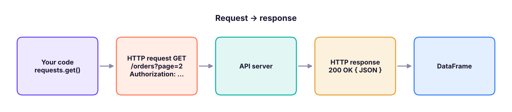

APIs, JSON and Web Scraping with requests and BeautifulSoup
Collect data from the web. Understand HTTP, call REST APIs with requests (GET/POST, query parameters, headers, authentication, pagination, retries and rate limits), flatten nested JSON with json_normalize, and scrape HTML tables and pages responsibly with BeautifulSoup and pandas.read_html.
- Explain HTTP methods, status codes, headers and JSON responses
- Call REST APIs with parameters, headers and API keys stored safely
- Handle pagination, timeouts, retries and rate limits
- Flatten nested JSON into DataFrames with json_normalize
- Scrape HTML with BeautifulSoup and read_html, respecting robots.txt and terms of use
HTTP in five minutes
An API (Application Programming Interface) lets programs ask another system for data. Web APIs use HTTP: the client sends a request (method, URL, headers, optional body) and receives a response (status code, headers, body, usually JSON).

| Method | Meaning | Status code | Meaning |
|---|---|---|---|
GET |
Read | 200 |
OK |
POST |
Create / send data | 201 |
Created |
PUT / PATCH |
Replace / update | 400 |
Bad request |
DELETE |
Remove | 401 / 403 |
Not authenticated / not allowed |
404 |
Not found | ||
429 |
Too many requests (rate limit) | ||
500–503 |
Server error: retry later |
A practice API
To keep this lesson runnable offline, we start a tiny local API that behaves like a real one (paginated orders, an API key, a rate limit). Every call below works the same way against real services.
import json, threading, time
from http.server import BaseHTTPRequestHandler, HTTPServer
from urllib.parse import urlparse, parse_qs
ORDERS = [{"id": i, "customer": {"name": n, "city": c}, "items": [{"sku": f"P{i}", "qty": i % 3 + 1, "price": 100.0 * i}], "status": s}
for i, (n, c, s) in enumerate([("Asha", "Pune", "shipped"), ("Ravi", "Delhi", "new"), ("Meera", "Kochi", "shipped"), ("Kabir", "Goa", "cancelled"), ("Zoya", "Pune", "new")], 1)]
HITS = {"n": 0}
class Api(BaseHTTPRequestHandler):
def log_message(self, *a): pass
def send(self, code, body, ctype="application/json"):
self.send_response(code); self.send_header("Content-Type", ctype); self.end_headers(); self.wfile.write(body.encode())
def do_GET(self):
u = urlparse(self.path); q = parse_qs(u.query)
if u.path == "/page": return self.send(200, "<html><body><h1>Prices</h1><table id='p'><tr><th>Product</th><th>Price</th></tr><tr><td>Chair</td><td>₹4,500</td></tr><tr><td>Desk</td><td>₹12,000</td></tr></table><a href='/about'>About</a><p class='note'>Updated daily</p></body></html>", "text/html; charset=utf-8")
if self.headers.get("X-API-Key") != "demo-key": return self.send(401, json.dumps({"error": "missing or bad API key"}))
HITS["n"] += 1
if u.path == "/flaky" and HITS["n"] % 2: return self.send(503, json.dumps({"error": "busy"}))
if u.path in ("/orders", "/flaky"):
page, size = int(q.get("page", [1])[0]), int(q.get("size", [2])[0]); st = q.get("status", [None])[0]
rows = [o for o in ORDERS if not st or o["status"] == st]
return self.send(200, json.dumps({"data": rows[(page - 1) * size: page * size], "page": page, "next": page + 1 if page * size < len(rows) else None}))
self.send(404, json.dumps({"error": "not found"}))
def do_POST(self):
body = json.loads(self.rfile.read(int(self.headers["Content-Length"])))
self.send(201, json.dumps({"created": True, "echo": body}))
srv = HTTPServer(("127.0.0.1", 0), Api); BASE = f"http://127.0.0.1:{srv.server_port}"
threading.Thread(target=srv.serve_forever, daemon=True).start()
print("practice API running on this machine at", BASE.rsplit(":", 1)[0])practice API running on this machine at http://127.0.0.1
GET requests with requests
import requests, os
os.environ.setdefault("DEMO_API_KEY", "demo-key") # in real life, set this outside the code
headers = {"X-API-Key": os.environ["DEMO_API_KEY"], "Accept": "application/json"}
r = requests.get(f"{BASE}/orders", params={"page": 1, "size": 2}, headers=headers, timeout=10)
print(r.status_code, r.url.replace(BASE, "BASE"), r.headers["Content-Type"])
payload = r.json()
print(payload["page"], payload["next"], payload["data"][0]["customer"])
bad = requests.get(f"{BASE}/orders", timeout=10)
print(bad.status_code, bad.json())
try: bad.raise_for_status()
except requests.HTTPError as e: print("HTTPError:", str(e)[:40])200 BASE/orders?page=1&size=2 application/json
1 2 {'name': 'Asha', 'city': 'Pune'}
401 {'error': 'missing or bad API key'}
HTTPError: 401 Client Error: Unauthorized for url:Always set a timeout, check the status (raise_for_status()), and keep keys in environment variables.
POST requests
r = requests.post(f"{BASE}/orders", json={"customer": "Asha", "items": [{"sku": "P9", "qty": 1}]}, headers=headers, timeout=10)
print(r.status_code, r.json())201 {'created': True, 'echo': {'customer': 'Asha', 'items': [{'sku': 'P9', 'qty': 1}]}}json= serialises the body and sets the Content-Type header for you. Use data= for form posts and files= for uploads.
Pagination, retries and rate limits
def fetch_all(path, params=None, max_pages=50):
rows, page = [], 1
with requests.Session() as session: # re-uses the connection
session.headers.update(headers)
while page and page <= max_pages:
resp = session.get(f"{BASE}{path}", params={**(params or {}), "page": page, "size": 2}, timeout=10)
resp.raise_for_status()
body = resp.json(); rows += body["data"]; page = body["next"]
return rows
orders = fetch_all("/orders"); print(len(orders), "orders fetched across pages")
def get_with_retry(url, tries=4, backoff=0.2, **kw):
for attempt in range(1, tries + 1):
resp = requests.get(url, timeout=10, **kw)
if resp.status_code not in (429, 500, 502, 503, 504): return resp
wait = float(resp.headers.get("Retry-After", backoff * 2 ** (attempt - 1))) # exponential backoff
print(f" attempt {attempt}: {resp.status_code}, retrying in {wait:.1f}s"); time.sleep(wait)
resp.raise_for_status()
print(get_with_retry(f"{BASE}/flaky", headers=headers).status_code)5 orders fetched across pages attempt 1: 503, retrying in 0.2s 200
Respect rate limits: read the API's documented limits, honour Retry-After, cache results, and sleep between calls.
Flattening nested JSON
import pandas as pd
pd.set_option("display.width", 160)
flat = pd.json_normalize(orders, sep="_")
print(flat.drop(columns="items"))
lines = pd.json_normalize(orders, record_path="items", meta=["id", "status", ["customer", "city"]], sep="_")
lines["value"] = lines.qty * lines.price
print(lines)id status customer_name customer_city 0 1 shipped Asha Pune 1 2 new Ravi Delhi 2 3 shipped Meera Kochi 3 4 cancelled Kabir Goa 4 5 new Zoya Pune sku qty price id status customer_city value 0 P1 2 100.0 1 shipped Pune 200.0 1 P2 3 200.0 2 new Delhi 600.0 2 P3 1 300.0 3 shipped Kochi 300.0 3 P4 2 400.0 4 cancelled Goa 800.0 4 P5 3 500.0 5 new Pune 1500.0
record_path explodes a nested list into rows; meta copies parent fields onto each row.
Real public APIs to practise with
| API | Data | Notes |
|---|---|---|
| data.gov.in | Indian government open data | Free API key |
| RBI DBIE, World Bank, IMF | Economic indicators | wbgapi package for the World Bank |
| Open-Meteo | Weather forecasts and history | No key |
| GitHub REST API | Repositories, issues | Token raises limits |
| Alpha Vantage, yfinance | Stock prices | Free tiers, rate-limited |
| OpenAI, Anthropic, Gemini | LLMs | Paid keys, see GenAI track |
# Example (needs internet): daily max temperature in Pune from Open-Meteo
r = requests.get("https://api.open-meteo.com/v1/forecast",
params={"latitude": 18.52, "longitude": 73.86, "daily": "temperature_2m_max", "timezone": "Asia/Kolkata"}, timeout=10)
weather = pd.DataFrame(r.json()["daily"])Web scraping
When there is no API, you can parse HTML. BeautifulSoup navigates the HTML tree; pandas.read_html grabs <table> elements directly.
from bs4 import BeautifulSoup
from io import StringIO
html = requests.get(f"{BASE}/page", timeout=10).text
soup = BeautifulSoup(html, "html.parser")
print(soup.h1.text, "|", soup.find("p", class_="note").get_text(strip=True), "|", [a["href"] for a in soup.find_all("a")])
rows = [[td.get_text(strip=True) for td in tr.find_all(["td", "th"])] for tr in soup.select("table#p tr")]
print(rows)
t = pd.read_html(StringIO(html))[0]
t["Price"] = t["Price"].str.replace(r"[₹,]", "", regex=True).astype(int)
print(t, t.Price.sum())
srv.shutdown()Prices | Updated daily | ['/about'] [['Product', 'Price'], ['Chair', '₹4,500'], ['Desk', '₹12,000']] Product Price 0 Chair 4500 1 Desk 12000 16500
| BeautifulSoup | Finds |
|---|---|
soup.find("tag", class_="x") |
First match |
soup.find_all("a") |
All matches |
soup.select("div.card > h2") |
CSS selectors |
el.get_text(strip=True), el["href"] |
Text and attributes |
For pages built by JavaScript, use Playwright or Selenium to drive a real browser, or look in the browser's Network tab for the underlying JSON API.
Check the site's terms of use and robots.txt, prefer official APIs, identify your scraper with a User-Agent, go slowly (one request every few seconds), cache pages, and never collect personal data without a lawful basis (India's DPDP Act 2023, GDPR). Logged-in or paywalled content is usually off-limits.
Summary
- HTTP: methods (GET, POST…), status codes (200, 401, 404, 429, 5xx), headers and JSON bodies.
requests.get(url, params=, headers=, timeout=);r.json();r.raise_for_status(); keys from environment variables.- Loop over pages with a
Session; retry 429/5xx with exponential backoff and honourRetry-After. pd.json_normalize(data, record_path=, meta=)flattens nested JSON.- Scrape with BeautifulSoup or
pd.read_htmlonly when allowed; prefer APIs and be polite.
1. What does status code 429 mean?
2. Why set timeout= on every request?
3. Where should an API key be kept?
os.getenv.4. What does json_normalize(..., record_path="items") do?
meta keeps parent fields.5. Which is the best first option to get data from a website?
6. Which tool can read every <table> on a page into DataFrames?
(1) Using the Open-Meteo example (on your machine), fetch 7 days of forecasts for three cities and combine them into one DataFrame. (2) Write fetch_all for an API that uses offset/limit instead of pages. (3) Scrape the list of tables from a Wikipedia page of your choice with read_html and clean one of them.
Show solution
cities = {"Pune": (18.52, 73.86), "Delhi": (28.61, 77.21), "Kochi": (9.93, 76.27)}
frames = []
for name, (lat, lon) in cities.items():
r = requests.get("https://api.open-meteo.com/v1/forecast", params={"latitude": lat, "longitude": lon, "daily": "temperature_2m_max", "timezone": "Asia/Kolkata"}, timeout=10)
frames.append(pd.DataFrame(r.json()["daily"]).assign(city=name))
df = pd.concat(frames)
def fetch_offset(url, limit=100):
out, offset = [], 0
while True:
batch = requests.get(url, params={"offset": offset, "limit": limit}, timeout=10).json()
if not batch: return out
out += batch; offset += limitQ: How do you collect data from a paginated API reliably? Use a session, loop until there is no next page/cursor, set timeouts, retry 429/5xx with backoff, respect rate limits, log progress, and make the job restartable.
Q: API vs web scraping? APIs are stable, documented and permitted; scraping depends on page structure, can break, and has legal and ethical limits.
Q: How do you turn nested JSON into a table?
pd.json_normalize with record_path and meta, or explode list columns and expand dict columns.
Practise more online
Free, trusted places to test yourself on this topic. Links open the original site in a new tab.